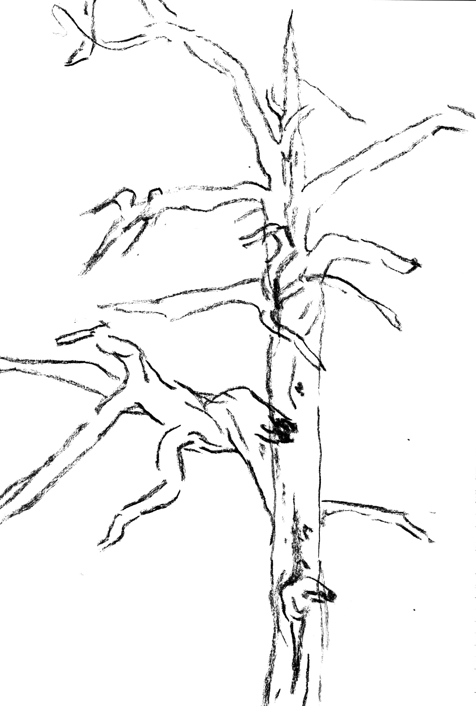

relationship
rakkaus
Can one feel love towards non-human nature like forests? If so, does it mean when we love nature, we’ll treat it better? Philosopher Elisa Aaltola introduces a notion of ‘the love paradox’, suggesting that “biological love of other animals and nature can also have deeply negative and anthropocentric moral consequences.”
Aaltola lists the dangers of focusing on the biological side of love – such as focusing only on appealing nature and sidelining the less alluring, instrumentalizing nature for our own benefit and not realising the full effects of our well-meaning actions. This explains how “even conservation work often highlights attractive species, whilst hordes of less attractive species all too easily gain less focus.”
We need to think how we can better direct our love and care of nature even when it requires sacrifices from us. “Affectively rewarding love has its place, but it needs to be complemented by more other-directed and less partial forms of love. Indeed, during this era of anthropogenic nonhuman crises, more focus on what morally inclusive love of other animals and nature may mean, is desperately needed.”